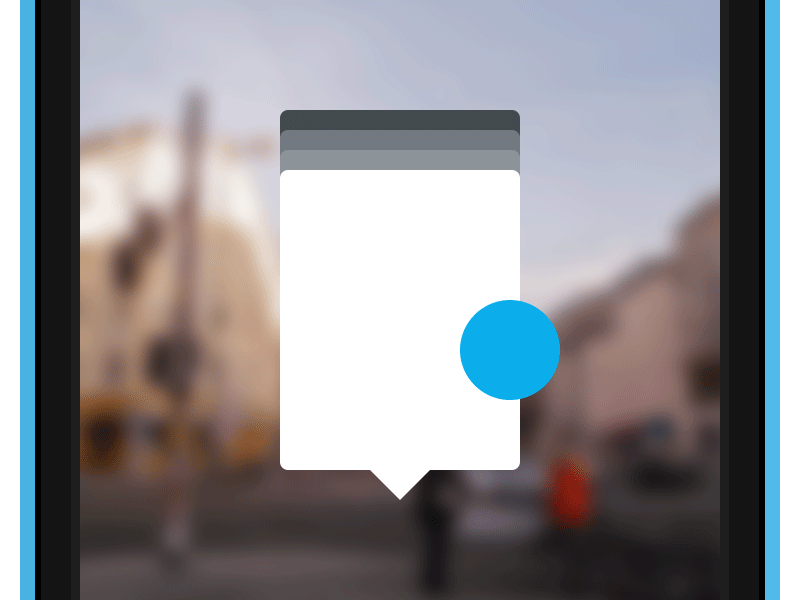

Determine an interesting scene as your frame for the design. Why did you select this scene?

The scene I chose is Rosenthaler Platz, in Berlin. I imagine a tourist arriving right from the airport and one the first places they’ll reach can be Rosenthaler Platz. I wanted to display a setting that is likely to happen.
I often see very improbable settings, focusing too much far or too much close to a place (panoramas or close-ups). I believe that choosing a more realistic scene will help the final design to be more convincing.
You can download all the Project’s resources right below here.
Produce a pixel perfect design for the context and the action icons that appear to overlay the scene. Send us the psd file. Describe what the context explains and why. Describe what the actions do and why.
The context is a famous square in Berlin (as I just wrote). I chose to design the concept app in Portrait Mode, because I see the Landscape Mode good experience-speaking, and easier to integrate with iOS.
I also imagine a tourist (example) with a shopping bag or a baggage: would it be comfortable to hold the phone with—basically—two hands? Suppositions are not always right, but I find this one particularly accurate, in my opinion.
Obviously, I’d like then to integrate a Landscape Mode since it could allow interesting functionalities to be displayed. Such as a micro map of the area, for example (which I tried in portrait mode: the filename says it all).

For more nearby results, other than cluttering the visual with overlapping balloons, I opted to hide those other results behind the main one (nearest/more relevant). Since the concept is to have little cards to play with, arrange them as a deck was the most immediate and fun idea to play with. I think the outcome is quite nice!
Produce a pixel perfect design for the full screen content view that appears after you act on an item from the augmented reality overlay. For example, if the overlay shows context and actions for a restaurant, the full screen restaurant view should be a detailed restaurant listing.
Tapping the balloon takes you directly to the full related result. The only step in between (or better, optional) I would add is a complete List of the Places nearby, not automatically updated, for obvious reasons. But in this iteration I wanted to keep the concept very straight-forward and easy to grasp. Shuffle the cards and then play with them.
The full page of the Item shows (in this case a Restaurant) different actions that can be performed on it. Actions like «Reserve a Table» add the possible value to the app. Ultra-specific actions like these would permit to have a true advantage on any Maps app out there, by building a business around these actions.
Show the states for each action. For example, if your restaurant context overlay comes with a “find a table” action, show what happens when the user taps the action.
As I was writing, each item Item can have different specific actions. I used the «Reserve a Table» action as you suggested, but the custom actions could be more. Buying tickets for Events, redeem discounts for Shops, find books for Libraries and so on. It could be fun to find them all!
The workflow I designed to Reserve a Table is pretty simple, but I’d like in the future to integrate more the online account with the App’s core functionalities.
Other actions instead usually point to the apps the user has installed. Directions takes to Maps, Website to Safari and so on. Rather than trying to do everything from only one—big—app, it’s better in my opinion to leave to further developments the implementation of such features.
If you start with sketches, include all the sketches.
The sketch phase is essential, I believe. From there I could outline the main features, the mood of the design and finally start—already—iterating on the items of the interface.
If you start with a moodboard, include everything on the mood board.
This time, my Mood Board was really simple, since some examples were already provided. Obviously, I did further researches. Admittedly, the topic is full with a lot of concepts (some of them graphically gorgeous), but I see very few of them working in a real implementation. I still find the concept cool though!
If you produce multiple iterations of the scene, context, and actions, stash away a png of each iteration and walk us through the evolution of the design with words explaining your thinking at each step and how the next step addresses what you didn’t think was working in the prior step.
I usually stash some PSDs during my workflow, so I can maintain a cleaner PSD for each iteration. Also, if needed, I can pick up older items in the case I want to re-try them.
The Augmented Reality Camera
Pictures 1, 2, 3
-
The main concept has been transferred into wireframe/PSD (at this stage they look basically the same).
I realized after few moments that many thing didn't work out well as I expected. So I started iterating on what was problematic: icons, general poorness, and that meaningless Navigation Bar. -
The first attemp was to iterate on the Balloons. I tried also the classical horizontal approach, but again, the result was just something between poor and… meh.
I also started wondering if my space-saving compass (at the bottom) had any meaning at all. Short answer: no.
It was difficult to design due to calculations to be made and even difficult in defining how it would behave, plus it was still obscure even to myself. -
Now things look better. The new icons are clear enough, Balloons have finally a defined layout, the new compass it’s looking much more better and suggests his functionality at a first glimpse. I also implemented a Zoom Bar that let you see farther without moving (I realized this need for myself while testing real apps, such as Layar and Wikitude).
Now it’s time to improve the overall look and make it more coherent compared to other Views.
The Result View
Pictures 1, 2, 3
-
Like for the AR Camera View, I started putting down the elements I had in mind.
It was soon clear that the Google-ish look wasn't a nice fit for the App’s visual language, so it was clear I had to move away from it. Also, the ← Back was almost illegible even with a selected photo: time to rethink these details and bring a more polished look in stage. - In this iteration, the page started to look in a way that I started to like. Anyway, fonts and the general assets were still too much heterogeneous. Also, many icons were looking out of place.
- Finally things started to look and feel better, in the proper place. However, some corrections on the icons and the on Header were still needed. So I did.
Explain the choices in the design type, color, layout, etc. What vibe are you creating with these choices and how does it reflect the notion of discovery?
The main font used is Helvetica Neue. With this choice I can make the app feel more native, related to the OS itself. Like a bundled item. For technical reasons, in the Balloons, I opted for the Condensed variant in order to push as much characters as possible in the narrow container, without sacrificing the final legibility.
Colors tend to be present, but they’re not overwhelming. The main stage is taken by the AR Camera View, so it wouldn’t make much sense to confuse the user with too many of them.
I chose to give specific colors to the various scopes in order to make the badges more meaningful and to be able, one day, to decline the Result View with a specific color accent or with some other specific design choices.
«Clean but meaningful» was the main theme guiding me through all the process. The discovery should be at first useful and, if possible, fun. The fun can be transmitted with nice interactions and rewarding/successful actions.
Discover a Restaurant and then being simply directed to the Maps won’t be enough to justify this kind of App’s existence.
Explain what visual details you use and why. Be extremely meticulous here. Do you have an icon with a 1px border? Why? Is the context a semitransparent background or solid color? Why? Do you use some extra details to make context and icons pop off the background scene? Would you use the same elements on a typical solid background such as what you deal with in an app? Why?
I made icons look thin, but not too much. If a icon is on a semi-transparent background and it’s very thin (hairline thickness), it would be extremely difficult to comprehend. Imagine a bright scene under the sunlight. Hariline icons look cool just if you can see them clearly.
I used often outlined icons because iOS7 brings this concept. Obviously, I would like to unify more the look and feel of all the icons I designed, making the whole experience visually more coherent.
Backgrounds for Balloons are solid. For spacing reasons the text needs to be smaller than usual. Making the background semi-transparent will just ruin the legibility. Also, a solid background permits me to justify the swipe carousel of the Balloons.
They also have a small triangle that helps the user to locate better the targets. Originally (you can see that from the sketches), I was thinking to link the Balloon and its target with a thin line, but I found it very difficult to see even in the mockups of the very first iterations, so I opted for a more classical bottom tip. I makes also more sense because the balloons behind could be slightly displaced than the front-facing result, and the tip helps the idea of "grouping".
I made the background semi-transparent only in the Quick Settings View, to give the idea of actions very quick to perform and not out of context (the Augmented Reality Camera). The snapshot is fixed so the user can remember the position she/he was prior to change the settings. Also, it should help performances and possible battery drain (I think these apps generally consume quite a lot of resources).
Augmented reality can feel like unnatural, scary, posthuman scifi, or it can feel very natural and fun. How does your design make it feel natural and fun?
I think you’re right pointing this out. I really long for AR (and menu-less) interfaces but, while they shine on movies and videogames, I see them still difficult to implement on small screens and where a lot of data has to be exposed without clutter the visual. Obviously, this is not an excuse for not trying it today.
A more traditional take on the App’s design could help the final user feel more at home.
The feeling of fun is yet to be built. A 100% fun, I mean. There are already some interactions (like the swipe through the Balloons, the moving compasses) that make it nice and natural to use. The real fun will come with rewards, discounts, easy in-context actions and a more characterized communication in the app itself. All of these features will make the App more fun to use. And definitely enjoyable.
I felt I had to add this bonus "question". While I was designing all the screens, I start thinking what I could do more. But keeping iterating would just delay the deadline beyond my expectations. So: what would you like to change or improve in the next iterations of this App?
Let’s face it. This App is not perfect. Since this is more a proof-on-concept, a prototype, I fear it’s not well crafted everywhere. There could be some inconsistencies in the flow and ultimately the «Fun» factor has to be improved, other than minor/aesthetic details. I also believe we’ll need more data for this task. User are customers and discover what is interesting for them is not always a straight-forward process. Also, depending on the activities we want to focus, we might need to make partnerships or deals even with the local activities (POIs).
Thanks for reading! Feel free to ask me anything about the work done until here. I hope you would like to spend few moments expressing your thoughts, comments and also critics. Especially the last one! I really desire to improve and having a feedback from you would be a honour. :)